LEIA ONLINE
The Walking Dead (Os Mortos-Vivos, no Brasil) é uma publicação mensal de banda desenhada, publicada nos Estados Unidos pela Image Comics desde 2003. A história foi criada e escrita por Robert Kirkman e o desenhista Tony Moore, substituído por Charlie Adlard a partir da edição número 7, mas que continuou a desenhar as capas até a edição número 24. A série narra a história de um grupo de pessoas tentando sobreviver em um mundo atingido por um apocalipse zumbi. No Brasil a série é publicada em forma de encadernados pela HQM Editora. A série não teve grandes vendas durante seu lançamento, mas ganhou grande popularidade com o tempo. Em 2006, a primeira tiragem da trigésima terceira edição da série esgotou em apenas 24 horas. Em 2010 a série ganhou o prêmio Eisner Award de Melhor série contínua, anunciado na San Diego Comic-Con.
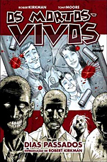 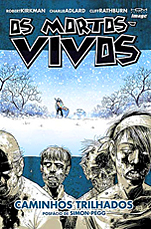 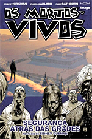 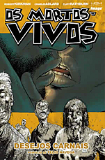 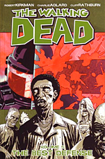 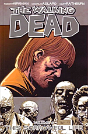 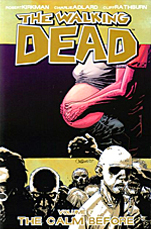 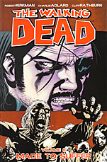 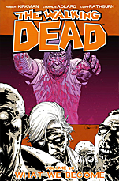
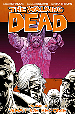
 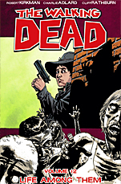
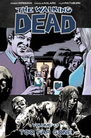
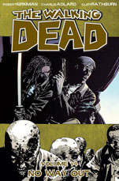
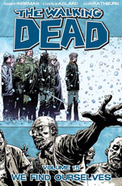
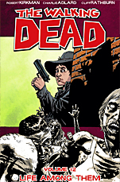
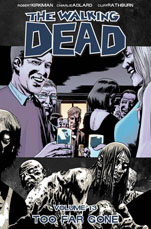
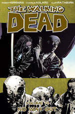
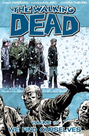
 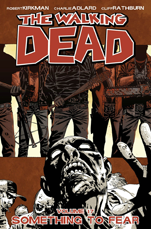
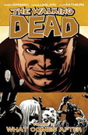
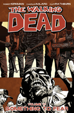
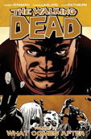